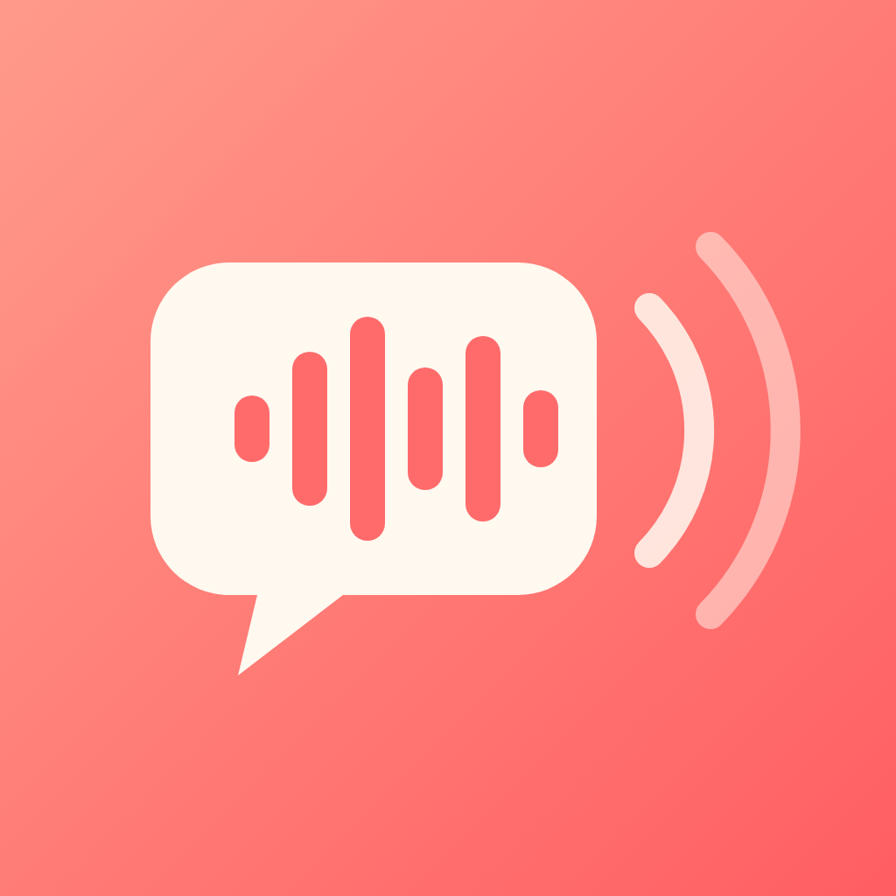

Little EchoesSupport
Questions, problems or feedback? Email us and we'll reply as soon as we can, usually within two business days.
Please include the email address you use to sign in and, if something went wrong, what you were doing at the time.
How do I record my child?
Open the app and tap Start Recording on the Home screen. Little Echoes shows a question picked for your child's age; tap the microphone, let them answer, then tap again to stop. You can listen back, re-record, tag the mood and add a note before saving.
Where are my recordings?
Open the Memories tab. Timeline shows every recording by day, Calendar lets you jump to a date, and Growth plays their recordings across the months and years.
I got a new phone. How do I get my memories back?
Install Little Echoes and sign in with the same email or Google account you used before. Your profile, children and recordings are restored from your private cloud backup.
How do subscriptions work?
Subscriptions are bought and billed through your Apple ID and renew automatically until you cancel. You can cancel at least 24 hours before the end of the current period to avoid being charged again.
How do I cancel or change my subscription?
In the app, go to Settings → Manage subscription, or on your iPhone open Settings → your name → Subscriptions → Little Echoes. Apple handles all billing, so refunds are requested from Apple at reportaproblem.apple.com.
I paid but the app still asks me to subscribe
Go to Settings → Restore Purchases in the app (or tap Restore Purchases on the plans screen) while signed in to the same Apple ID you paid with. If that doesn't work, email us.
How do I delete a recording or my account?
To delete one recording, open it in Memories and tap Delete. To delete everything, go to Settings → Delete account. This permanently removes your account, your children's profiles and every recording and video from our servers. Deleting your account does not cancel an Apple subscription; cancel that in your Apple ID settings.
Reminders aren't arriving
Check that notifications are allowed for Little Echoes in your iPhone's Settings → Notifications, then choose your reminder days and time again in the app's Settings.